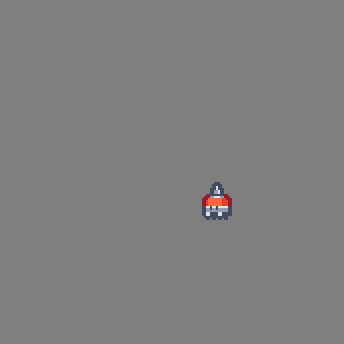
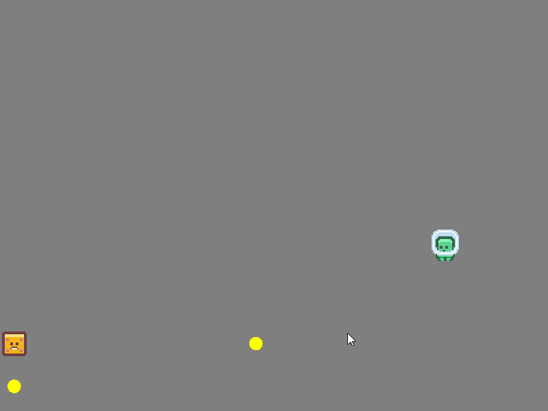

Coroutines allow you to pause the execution of a function. The same function can resume its execution in the future:
local function print_recipe()
print "mix 1 tbsp sugar, 1 tsp vanilla extract, 1 egg yolk, 1/2 cup heavy cream"
coroutine.yield()
print "bake at 300f (150c) for 30 mins. cool down before chilling in fridge"
coroutine.yield()
print "top custard with sugar, heat sugar with torch"
end
local co = coroutine.create(print_recipe)
while coroutine.resume(co) do
print "okay..."
end
print "yay! I made creme brulee!"
Output:
mix 1 tbsp sugar, 1 tsp vanilla extract, 1 egg yolk, 1/2 cup heavy cream
okay...
bake at 300f (150c) for 30 mins. cool down before chilling in fridge
okay...
top custard with sugar, heat sugar with torch
okay...
yay! I made creme brulee!
I'll be going over some use cases for coroutines in the context of video games. Coroutines exist in many programming languages such as C#, C++, Rust, Python, and Lua. The code examples below will be using Lua.
AI Patrolling

How would you write a simple AI that covers a square path, turning 90 degrees every second? Here is what I've come up with:
-- constructor
function Robot:new(desc)
self.x = desc.x
self.y = desc.y
self.dx = 1
self.dy = 0
self.TIMER_INIT = 1
self.timer = self.TIMER_INIT
end
-- gets called every frame
function Robot:update(dt)
self.timer = self.timer - dt
if self.timer <= 0 then
self.timer = self.timer + self.TIMER_INIT
self.dx, self.dy = self.dy, -self.dx
end
local speed = 100
self.x = self.x + self.dx * speed * dt
self.y = self.y - self.dy * speed * dt
end
This code is alright. I felt a little clever when I realized the patrolling behaviour can be expressed by swapping the x and y velocity components. It's terse, but it's not immediately clear that the object performs a patrol path in a square shape.
Below is the same gameplay behaviour, but now with coroutines:
function Robot:new(desc)
self.x = desc.x
self.y = desc.y
self.co = coroutine.create(Robot.co_update)
end
function Robot:update(dt)
coroutine.resume(self.co, self, dt)
end
function Robot:co_update(dt)
local speed = 100
while true do
while repeat_for(1, dt) do -- move right
self.x = self.x + speed * dt
_, dt = coroutine.yield()
end
while repeat_for(1, dt) do -- then down
self.y = self.y + speed * dt
_, dt = coroutine.yield()
end
while repeat_for(1, dt) do -- then left
self.x = self.x - speed * dt
_, dt = coroutine.yield()
end
while repeat_for(1, dt) do -- finally up
self.y = self.y - speed * dt
_, dt = coroutine.yield()
end
end
end
Yes, this example uses more lines of code than the previous, but the point is that the control flow reads linearly, step-by-step, like a recipe. First, move the robot to the right, then, move it down, then left, then up. The outer loop moves the control flow back up to the first step. It's now more apparent that this object moves in the path of a square.
Notice how there's also less state to keep track of between frames. The
state for velocity dx and dy has disappeared. This is important because
coroutines excel when it comes to representing...
State Machines
Let's try something more complex. Let's implement an entity that:
- moves to a random location
- then stops and shoots bullets in a spiral
- then shoots a ring of bullets
- then picks a new random location
- then repeats step 1

My solution without coroutines consists of three distinct states: move,
shoot1, and shoot2. move nudges the position closer to the random target
position, shoot1 keeps track of a timer and an angle, creating a bullet
every 0.1 seconds, and shoot2 creates a ring of bullets to the scene and then
picks a new target for the move state.
function Block:new(desc)
self.x = desc.x
self.y = desc.y
-- one of move, shoot1, or shoot2
self.stat = "move"
self.target_x = math.random() * getWidth()
self.target_y = math.random() * getHeight()
self.shoot_angle = 0
self.shoot_timer = 0
end
function Block:update(dt)
if self.stat == "move" then
if distance(self.x, self.y, self.target_x, self.target_y) > 1 then
self.x = lerp(self.x, self.target_x, 4 * dt)
self.y = lerp(self.y, self.target_y, 4 * dt)
else
self.stat = "shoot1"
self.shoot_angle = 0
self.shoot_timer = 0
end
elseif self.stat == "shoot1" then
self.shoot_timer = self.shoot_timer + dt
if self.shoot_timer > 0.1 then
self.shoot_timer = self.shoot_timer - 0.1
local dx, dy = vector(self.shoot_angle, 1)
self.pool:add(Bullet {x = self.x, y = self.y, dx = dx, dy = dy})
self.shoot_angle = self.shoot_angle + math.pi / 8
end
if self.shoot_angle > math.pi * 2 then
self.stat = "shoot2"
end
elseif self.stat == "shoot2" then
local angle = 0
while angle < math.pi * 2 do
local dx, dy = vector(angle, 1)
self.pool:add(Bullet {x = self.x, y = self.y, dx = dx, dy = dy})
angle = angle + math.pi / 8
end
self.target_x = math.random() * getWidth()
self.target_y = math.random() * getHeight()
self.stat = "move"
end
end
That's a state machine. Or at least the crude beginnings of a state machine.
Notice that the move case is concerned with shoot_timer and shoot_angle,
despite the act of moving this object having nothing to do with the shooting.
The same goes for target_x and target_y in the shoot2 case. The
variables target_x, target_y, shoot_angle, and shoot_timer are
stored across frame boundaries. There are ways around these problems, such as
writing finite state machines that handle transitions between states, and/or
using the State pattern à la Gang of Four, but let's try rewriting this in the
step-by-step style that coroutines allow:
function Block:co_update(dt)
while true do
local target_x = math.random() * getWidth()
local target_y = math.random() * getHeight()
while distance(self.x, self.y, target_x, target_y) > 1 then
self.x = lerp(self.x, target_x, 4 * dt)
self.y = lerp(self.y, target_y, 4 * dt)
_, dt = coroutine.yield()
end
local angle = 0
while angle < math.pi * 2 do
while repeat_for(0.1, dt) do _, dt = coroutine.yield() end
local dx, dy = vector(angle, 1)
self.pool:add(Bullet {x = self.x, y = self.y, dx = dx, dy = dy})
angle = angle + math.pi / 8
_, dt = coroutine.yield()
end
angle = 0
while angle < math.pi * 2 do
local dx, dy = vector(angle, 1)
self.pool:add(Bullet {x = self.x, y = self.y, dx = dx, dy = dy})
angle = angle + math.pi / 8
end
_, dt = coroutine.yield()
end
end
Look at how the data moved from living inside the object to living as local
variables in the co_update function. No more does the programmer have to deal
with variables defined far away from where they are being used, or think about
jumping around switch/case or if statements. It's easy to add additional
behaviour. Imagine that the object shoots another spiral of bullets after
shooting the ring. With coroutines, you can copy and paste the spiral shooting
code. With the previous version, you might add a new state shoot3, or keep
track of the number of times shoot1 has been visited. Neither solution sounds
pleasant to me (but then again, maybe I missed something).
Until now, I failed to acknowledge the existence of repeat_for. This is a
function that keeps track of the time elapsed. It keeps returning true until
the timer meets the threshold:
g_time = 0
function repeat_for(time, dt)
g_time = g_time + dt
if g_time < time then
return true
else
g_time = 0
return false
end
end
There's still a whole other side of coroutines that I am not going to touch in this article, and it's how coroutines simplify asynchronous code by making them read like synchronous code (network requests, file io, etc). Coroutines can be hard to get your head wrapped around. They provide a radically different way of thinking about state and control flow. Personally, writing code with coroutines has been a very joyful experience. Maybe the same also applies to you.
The recordings in this article are from a LÖVE application. The source code is available on GitHub.